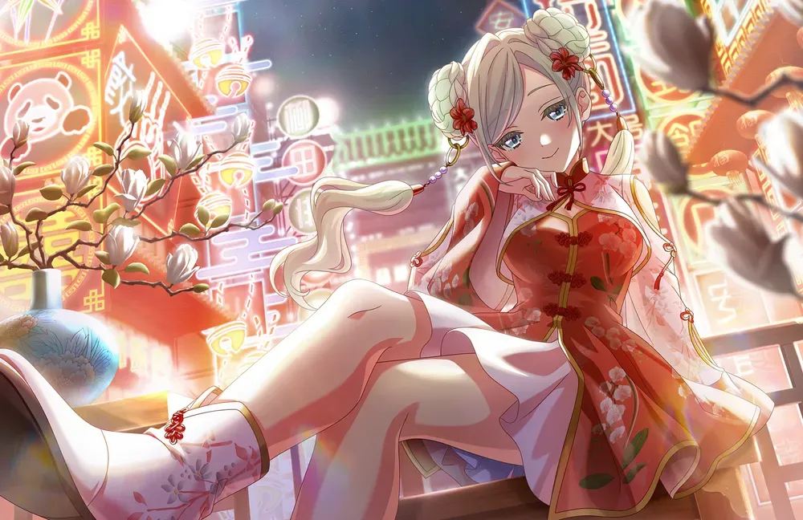
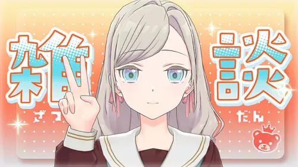
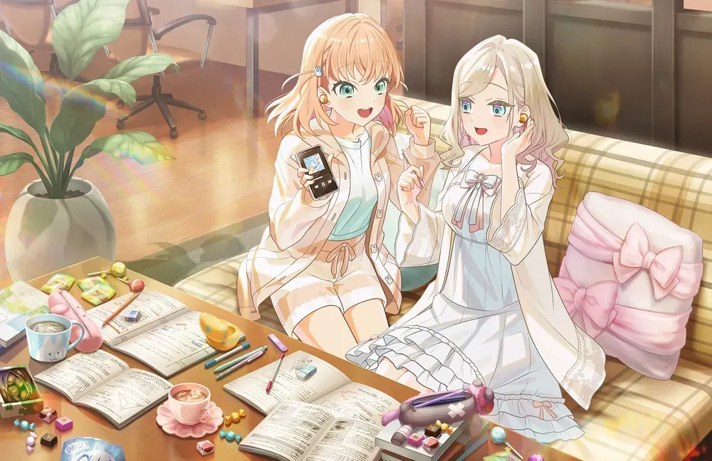
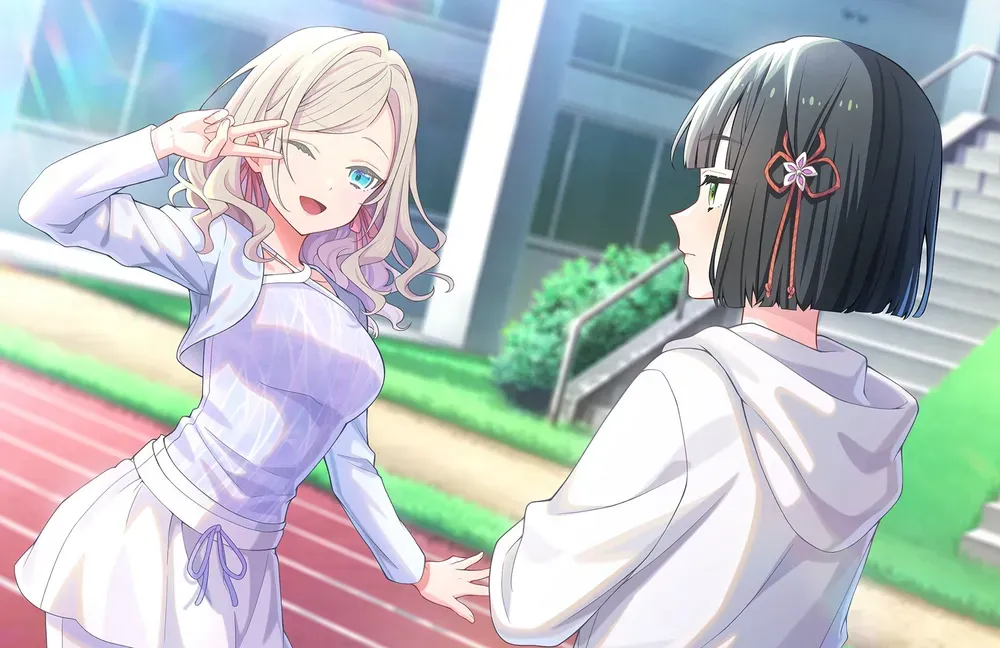
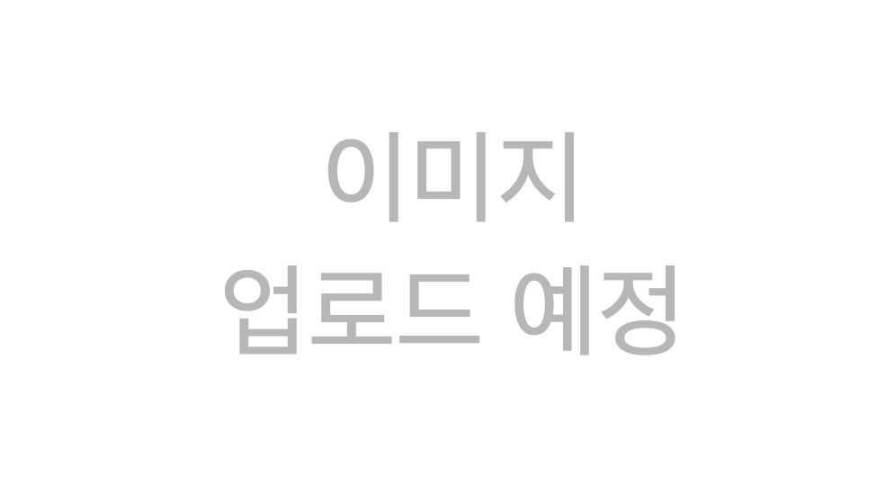
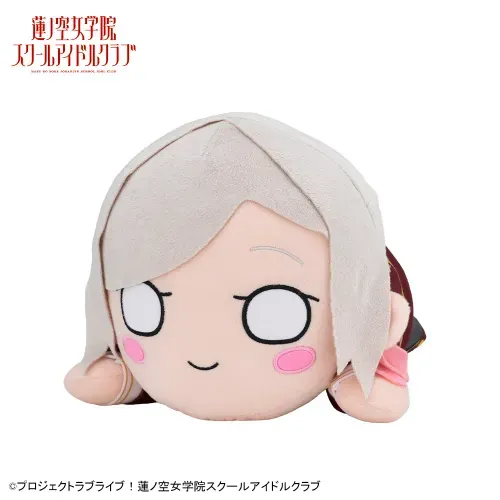
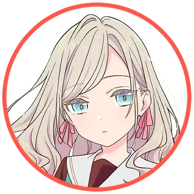
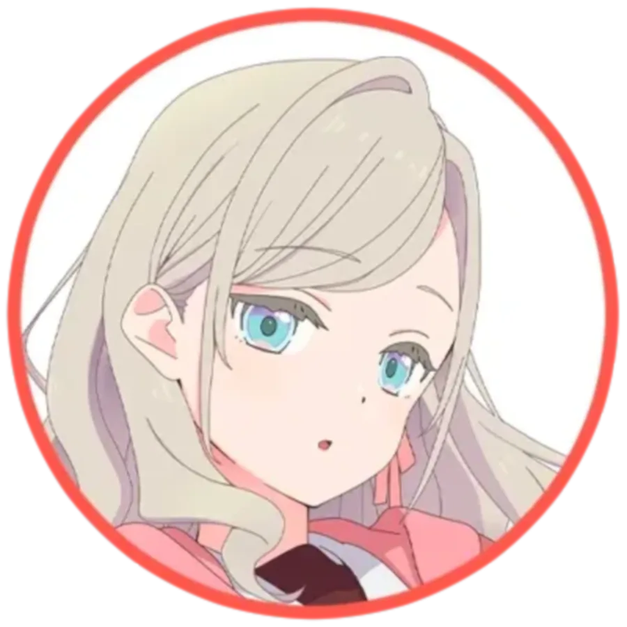

세라스 야나기다 릴리엔펠트
1. 개요
容姿端麗 才色兼備 誰もが羨む佇まい プリティキュートでマジ尊い
러브 라이브! 하스노소라 여학원 스쿨 아이돌 클럽의 등장인물. 하스노소라 여학원 스쿨 아이돌 클럽의 105기생 멤버.[5]
2. 상세
2.1. 자기 소개
(25.04.10 업로드)
스쿨 아이돌을 정말 좋아해서 수업 중에도 계속 스쿨 아이돌에 대해 생각하고 있다.
조금은 애교를 부리고 싶어하는 조금은 어리광쟁이 성격.
나가노 출신[6]으로, 히노시타 카호와는 병원 시절 친구인 '원친'이다.
바이올린 연주를 좋아하지만 본인은 취미라고 한다.
2.2. 외형


은발 벽안인, 전형적인 서양계 캐릭터의 특징을 가지고 있다. 속눈썹 색깔이 머리카락이나 눈썹과 비슷한 옅은 색깔이라는 특징도 있는데, 이는 러브 라이브 시리즈 전체를 통틀어도 매우 희소한 특징이다.
104기 활동기록에서는 오사와 루리노(151cm)와 나란히 섰을 때 키가 살짝 더 작게 그려지지만 실제로는 153cm으로 루리노는 물론 카치마치 코스즈(152cm)보다도 크며 최단신을 여유롭게 탈출했다.[7][8] 세라스는 루리노보다 2살 더 어리기 때문에 그새 키가 더 자랐을 수도 있다.
키가 작은 것과는 대조적으로 굉장히 글래머러스한 몸매를 가지고 있다. 미즈카와 여자 고등학교의 교복을 마이까지 차려서 입었음에도 가슴의 라인이 제대로 숨겨지지도 않을 정도이며, 똑같이 글래머러스한 히노시타 카호와 같은 병원 출신이라는 점에서 해당 병원의 정체에 대한 음모론이 우스갯소리로 나오기도 했다.
모모세 긴코, 유기리 츠즈리처럼 검은색 스타킹을 착용한다.

ちょ、尊いLOVE(초, 고귀한 LOVE) 리릭 비디오에서 어렸을 때 모습이 공개되었다. 자세히 보면 트윈테일으로 머리를 묶은 것을 볼 수 있다.
2.3. 보컬 스타일
파트너인 이즈미가 묵직한 저음 보컬인 것과 상반되게 미성의 높은 톤을 지니고 있다. 비음이 많이 섞인 미성이지만 기본기가 좋아서 데뷔곡인 Edelied에서 고음을 시원하게 올리는 모습을 볼 수 있다. 다른 고음 특화 멤버인 사야카보다 날카로운 고음을 내는데, 사야카가 한손검이라면 세라스는 창 내지는 레이피어 같은 이미지. FIRE BIRD 하이라이트 부분의 하이노트도 무리없이 소화한다.
유닛이 지닌 다크 판타지스러운 느낌과 캐릭터 자체의 똘끼 때문에 빠르고 어려운 가사를 많이 부르는데 어지간해서는 가사를 절지 않고, 보컬 안정성도 좋은 편이다.
3. 청덕동과의 관계 (청덕세라스아파트 유니버스)
"우리는 영애의 긍지를 가지고 살아갑니다!"
— 청덕세라스아파트 입주자 대표 회의 슬로건 (...)
효빈광역시 서구 청덕2동(청덕동)에 위치한 프리미엄 아파트 단지 '청덕세라스아파트(Cheongdeok Seras Apartment)'를 둘러싼 도시 전설적 밈. '청덕 다이버시티', '청덕 레인보우타운'과 함께 청덕지구를 대표하는 3대장 아파트 중 하나로, 겉보기엔 그저 세련된 신도시 아파트 같지만 그 실상은 효빈시 오타쿠 도시 계획의 대참사(?)이자 짬뽕 세계관의 결정체다.
3.1. 이름에 숨겨진 진실 및 어긋난 네이밍 논란
건설사인 효빈도시공사와 분양 대행사 측은 '세라스(Seras)'가 스페인어로 '저녁 노을'을 뜻하며, 단지의 아름다운 일몰 조망을 강조한 프리미엄 네이밍이라고 극구 주장하고 있다. 하지만 청덕(청정 덕후)동이라는 입지, 그리고 유독 고풍스러운 단지 디자인을 고려했을 때, 이 아파트의 진짜 이름은 세라스 야나기다 릴리엔펠트의 이름에서 그대로 따왔다는 것이 서구 주민들과 효빈시 오타쿠들 사이 학계의 정설이다.
본래 이 구역은 스쿨 아이돌 프로젝트의 헌정 구역(청덕지구 트라이앵글)으로 설계되었다. 니지가사키의 모티브인 청덕 레인보우타운, 유닛 'DiverDiva'를 저격한 청덕 다이버시티에 이어, 담당자가 사심을 담아 기습적으로 '청덕 세라스(야나기다 릴리엔펠트) 아파트'로 등록해버리는 대형 사고를 친 것. 그 결과 반짝이는 아이돌 무대 한가운데에 뜬금없이 판타지 영애가 튀어나오는 기묘한 세계관 붕괴가 발생했다.
3.2. 단지 특징 (귀족 영애 모티브, 전설의 부녀회장)
- 귀족 영애 모티브 조경: 아파트 조경은 판타지 소설에 나올 법한 릴리엔펠트 가문의 웅장한 저택과 정원을 모티브로 설계되었다. 단지 한가운데에는 은은한 라일락(Lilac) 색상과 미스릴 실버 조명이 비추는 신비로운 인공 정원이 조성되어 있으며, 단지 내 커뮤니티 센터의 간판은 평범한 '입주민 회의실'이 아니라 '릴리엔펠트 가문 집무실'이라는 기괴한 팻말이 붙어 있다.
- 전설의 부녀회장님: 현재 부녀회장은 금발의 엄청난 미인이라는 소문이 돌고 있으며, 평소에는 조용하고 상냥하지만 단지 내 불법 주차 문제나 분리수거 빌런이 등장하면 어디선가 거대한 무기(?)를 들고 와서 우아하고 강력하게 제압한다는 도시전설급 목격담이 있다. 주민들은 그녀를 부녀회장 대신 '세라스 님'이라고 칭송하며 부른다.
- BGM 버프: 아파트 단지 내 헬스장에서는 언제나 판타지 애니메이션 OST나 기사단 행진곡이 웅장하게 울려 퍼지며, 주민들의 전투력(?)이 묘하게 한 방향으로 상승하고 있다는 분석이 있다. 가끔 택배 기사님들이 "세라스 야나기다 릴리엔펠트 아파트 맞나요?"라며 풀네임으로 주소를 물어볼 때마다 입주민들의 어깨가 한껏 으쓱해진다고 한다.
3.3. 교통
단지 정문에서 도보 3분 거리에 2호선 3호선 환승역인 청덕역이 위치해 있어 더블 역세권의 훌륭한 입지를 자랑한다.
4. 매체별 행적
4.1. Link! Like! 러브 라이브! (스쿠코네 목록)
자세한 내용은 세라스 야나기다 릴리엔펠트/Link! Like! 러브 라이브! 문서를 참고하십시오.
 세라스의 스쿨 아이돌 커넥트 출연 목록
세라스의 스쿨 아이돌 커넥트 출연 목록
2025년 4월 출연 목록 펼치기 · 접기
 | 긴급! 105기 신입생 소개 방송! | 25.04.10. |
 | 세라스쨩에게 인터뷰-! | 25.04.12. |
 | 저희, Edel Note입니다. | 25.04.23. |
 | 105기 OPENING! Fes×LIVE | 25.04.30. |
2025년 5월 출연 목록 펼치기 · 접기
 | 105기 OPENING! Fes×LIVE 되돌아보기 방송 | 25.05.01. |
 | 영화관을 즐기는 방법 가이드입니다 | 25.05.13. |
 | 무라노 사야카의 라디오 제13화 | 25.05.15. |
2025년 6월 출연 목록 펼치기 · 접기
 | 우리도 대사 읽기. | 25.06.04. |
 | 신감각 ASMR을 전해드립니다. | 25.06.16. |
 | 세라스 야나기다 릴리엔펠트 생탄제 ~16살 편~ | 25.06.26. |
 | 105기 1st Term Fes×LIVE -나데시코제- | 25.06.29. |
2025년 7월 출연 목록 펼치기 · 접기
 | 칠석 이야기. | 25.07.07. |
 | 전율! 하스노소라 괴담 2! | 25.07.10. |
 | 출동! 루리루리 무엇이든 조사대! | 25.07.17. |
 | 가라오케 Edel Note에 어서 오세요. | 25.07.26. |
2025년 8월 출연 목록 펼치기 · 접기
 | 이 다음 카호쨩은 뭐라고 할까? | 25.08.02. |
 | 세라스 야나기다 센류의 세계에 어서오세요. | 25.08.09. |
 | 물론 올해도! 합숙 라디오! | 25.08.11. |
 | 드디어 이 세 명이 모였습니다 | 25.08.21. |
 | 105기 2nd Term Fes×LIVE ~A Day in Summer Light~ | 25.08.29. |
2025년 9월 출연 목록 펼치기 · 접기
 | 카나자와에 대해 설명합니다. | 25.09.06. |
 | Edel Note의 연습 방송 | 25.09.11. |
 | 잔뜩 춤추자! | 25.09.18. |
 | Ruri&To로 가라오케 하스노소라! | 25.09.27. |
2025년 10월 출연 목록 펼치기 · 접기
 | Fes×ReC：LIVE ～Bloom Days Extra～ | 25.10.04.~10.05. |
 | 트릭 오어 트릿!!! | 25.10.27. |
 | 105기 3rd Term Fes×LIVE ~린도제~ | 25.10.31. |
2025년 11월 출연 목록 펼치기 · 접기
 | 히메 선배의 이미지를 이야기하자 | 25.11.03. |
2025년 12월 출연 목록 펼치기 · 접기
 | 카츠라기 이즈미 생탄제 ~17살 편~ | 25.12.01. |
 | 패션쇼를 개최합니다 | 25.12.08. |
 | 크리스마스 프레젠트 전달입니다 | 25.12.25. |
 | 105기 4th Term Fes×LIVE ~The Buds after Snowmelt~ | 25.12.28. |
2026년 1월 출연 목록 펼치기 · 접기
 | 103-105th Fes×ReC: LIVE ~Road to Bloom~ CHAPTER：Beyond | 26.01.21. |
| Ruri&To로 "콧노래" 하스노소라♪다 | 26.01.24. |
2026년 2월 출연 목록 펼치기 · 접기
 | 잡담 | 26.02.02. |
 | 가라오케 하스노소라 Edel Note편! | 26.02.23. |
 | 대선배에게 인터뷰하자! 103기 대선배편 | 26.02.26. |
2026년 3월 출연 목록 펼치기 · 접기
 | 자랑하기 모임. | 26.03.07. |
 | Edel Note에 관한 공지가 있습니다 | 26.03.21. |
4.2. 애니메이션
자세한 내용은 세라스 야나기다 릴리엔펠트/애니메이션 문서를 참고하십시오.
4.3. 센터곡 일람
* 타이틀 곡은 볼드 처리
세라스의 센터곡 목록
드라이브・스페이드・크레이지
이자요이 셀레네
퓨전 크러스트
영애모브!
5. 2차 창작 및 동인 이미지
- 기존 하스노소라 4차원의 대명사격이었던 유기리 츠즈리를 넘어서는 5차원적인 성격의 캐릭터다 보니 이상한 드립으로 멤버들을 당황하게 하는 연출이 많이 나오고 있다. 실제로 104기 시나리오에서 츠즈리와 대화할 때마다 죽이 잘 맞는 모습을 보여주었다.
- 이 때문에 2차 창작러들에게는 다루기 어려운 캐릭터로 손꼽히면서도 동시에 쉬운 캐릭터로도 비춰지는데, 워낙 이상한 짓을 많이 해서 대충 아무 이상한 행동이나 시켜도 '세라스라면 그럴 수 있다' 하며 납득하는 사람들이 나오기 때문이라나.
- 입학 초기에 각 유닛을 체험할 때 '나는 처음부터 이 유닛에 들어갈 생각이었다'며 천연덕스럽게 능청을 떨고, 온갖 미사여구를 붙인 자기소개문을 읊는 바람에[9] 긴코와 사야카의 어이
와 러브라이버들의 손발를 출타하게 했다.
- 이름이 굉장히 어렵고 미들네임까지 있는지라 옆 나라 출신 빈 마르가레테가 처음 공개될 때 그랬던 것처럼 이름을 괴상하게 부르는 밈이 있다. 이 때문인지 카호가 세라스를 부르는 별명인 '셋쨩'으로 불릴 때가 많다.
- 주로 엮이는 동물은 곰, 해달, 포메라니안 등이 있다.
- 아이콘이 곰이라 초창기에 동물로 모에화가 될 때는 대부분 곰으로 그려졌다.
- 좋아하는 동물이 해달이라 콜라보 등에서는 주로 해달과 매칭된다.
- 작은 체구와 머리스타일이 포메라니안과 닮아 포메라니안으로 그려지기도 한다.
- 매미를 무서워한다. 활동기록 105기 5화에서 여름 합숙 맞이 야외 담력훈련을 했는데 세라스는 매미를 무서워하고 파트너로 같이 간 이즈미는 귀신을 무서워해 숲 한가운데서 비명을 꽥꽥 질러대는 총체적 난국이 되기도 했다.
- 카호처럼 숙제를 잘 안하는 편인지 카호, 코스즈와 함께 여름방학 숙제가 밀린 모습이 공식 4컷 만화에서 나왔다.
- 단위를 엄청나게 크게 부풀려 말하는 장난을 자주 친다.[10] 외로움을 자주 느끼다 보니 과장하던 것이 버릇으로 남은 것이라고 한다. 성우인 미야케 미우의 말에 의하면 4차원스러운 드립을 치는 것 또한 상대방이 자신에게 흥미를 가져 줬으면 하는 의도가 있는 것이라고 말한 바 있다.
6. 커플링
* 같은 유닛 → 동기 → 기타 멤버 공식 넘버 순 정렬

본인의 캐스팅 제안을 수락해 미즈카와로 전학까지 온 은인이자 같은 유닛 동료. 세라스 본인은 이즈미를 서포트하는 역할이었으나 카호의 제안으로 스쿨 아이돌로 러브 라이브! 결승 플레이오프에 참가, 공식적으로 이즈미와 한 팀이 되었다. 비록 학교의 폐교는 막지 못했지만 이즈미와 함께 하스노소라에 진학, 본격적인 스쿨 아이돌 활동을 시작하게 된다. 세라스는 원래 DOLLCHESTRA 입부를 생각하고 있었으나 최종적으로 이즈미와 한 번 더 유닛을 결성하게 된다. 세라스의 목표는 유닛으로 활동하는 1년 안에 이즈미를 스쿨 아이돌에 빠지게 만드는 것이라고 한다. 이즈미는 세라스의 4차원스러운 발언을 쿨하게 무대응(...)으로 넘기곤 한다.


소꿉친구이자 또 다른 은인. 카호처럼 세라스 역시 몸이 약했는지 어릴 때 병원 신세를 졌고, 이 과정에서 2살 연상의 카호와 친해지게 되었다. 이후 본인은 중학교 3학년이 된 채 고등학교 2학년이 된 카호를 만나게 되었고, 미즈카와의 폐교 소식을 전해들은 카호가 기지를 발휘해 세라스를 스쿨 아이돌로서 무대에 세우게 된다. 카호는 세라스를 셋쨩(せっちゃん), 세라스는 카호를 하나쨩(花ちゃん)이라고 부른다.[11] With x MEETS에서는 세라스가 어떤 4차원적인 발언을 해도 카호는 익숙한 듯 넘기는 모습이 나온다.


긴코에겐 다소 버거운 존재로 묘사되는데, 긴코가 1년 선배임에도 본인 소꿉친구인 카호의 후배라는 이유로 선배가 아닌 '긴코'라고만 불리는 수모를 당했고, 입학한 뒤에도 '긴코쨩빠이' 등으로 부르며 절대 존대하지 않으려는 의지를 나타냈다. 마침 카호와 세라스가 소꿉친구라서 코즈에가 졸업한 상황에서 카호와 가장 많이 엮이는 멤버가 긴코인지라 2차 창작 등에서는 연적으로 취급하기도 한다. 다만 이즈미의 발언에 따르면 세라스가 긴코를 놀리는 것은 세라스가 긴코를 마음에 들어하기 때문이라고 한다.


코스즈에게는 유일한 후배인지라 기본적으로 잘 챙겨주는 모습으로 나오며, 세라스 역시 긴코와는 달리 코스즈는 꼬박꼬박 선배라고 부르며 대우를 한다.
6.1. 멤버 중간생일 기념일
7. 캐릭터 상품


교복 Ver.
사복 Ver.
令嬢モブ！ Ver.



8. 기타
- 러브 라이브! 시리즈 역사상 2번째 중학교 3학년 스쿨 아이돌이자 3번째 14세 스쿨 아이돌이었다.[12][13] 현재는 고등학교 1학년으로 진급했고 생일을 지나 현재는 16세가 되었다.
- 러브 라이브 시리즈 사상 최초로 미들네임까지 붙은[14] 긴 이름인 만큼 러브라이버들도 풀네임을 외우기 힘들어 이름 대신 '셋쨩'으로 부르는 경우가 왕왕 보일 정도.
- 하스노소라 2nd 팬북에서 독일계 하프로 밝혀지며 시리즈 역사상 최초의 독일계 멤버라는 기록을 세우게 되었다.[17] With×MEETS에서 언급한 바로는 어머니가 독일인이라고 한다. 다만, 쭉 나가노현에서 성장했기에 독일어는 모른다고. 공식적으로 국적이 어디인지는 알려진 것이 없다.[18]
- 정작 속내를 드러내는 것은 꽤나 미숙한 모습인데 미즈카와 폐교 직전 스쿨 아이돌을 하고 싶었음에도 끝까지 숨기다가 카호가 용기를 주어서 무대에 서게된 일도 그렇고, 하스노소라 입학 이후에는 이즈미와 함께 활동하고 싶은 마음이 굴뚝같았지만 역시 카호와 상담하기 전까지 혼자 전전긍긍하기만 했다.
- 공식 넘버는 10번이다. 다른 10번인 시오리코, 마르가레테, 시온도 모두 1학년이라서, 10번 캐릭터가 1학년이라는 전통은 계속 이어지고 있다.
- 졸업한 선배인 오토무네 코즈에와 더불어 6월생이다.
- 그룹 내에 특정 월에 태어난 캐릭터가 2명 이상 있는 경우는 Aqours의 사쿠라우치 리코와 쿠로사와 루비, 니지동의 엠마 베르데와 쇼우 란쥬, 미아 테일러와 코노에 카나타에 이은 네 번째이다.
- 2026년 4월부터 AiScReam의 2기 추가 멤버로 이키즈라이부!의 아자부 마이와 같이 선정되었다.
- 2026년 3월 103기 선배들의 졸업으로 106기 후배 신입생들이 공개되면서 사실상 선배로 올라가게 되었다.
- 2026년 6월 Link! Like! 러브 라이브!의 서비스 종료에 따라 마지막으로 추가 합류한 신입생이 되었으며 사실상 진짜 막내가 되었다.[19]
8.1. 프로필 일러스트




8.2. 생일 굿즈/일러스트

2025.06.26.

2026.06.26.

2025.06.26.